Еще более сложный замысел реализован в задаче № 000. Здесь имеются две пары эхо-вариантов с правильными матами.
№ 000
А. Галицкий «Шахматное обозрение», 1893 г. (версия А. Хаит)
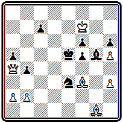
Мат в 4 хода
В первой паре жертвы ферзя завершаются матами слоном: 1. Cb 7 Kd 5 2. Фе8+ Кр f 4 3. Фе3+ К:е3 4. С h 2 # и 1... Kpd 4 2. Ф d 7+ Kpc 4 3. Ф d 5+ K : d 5 4. С:а6#; во второй паре проходят диагональные эхо-маты ферзем: 1... Ch 4 2. Ф e 8+ Kpd 4 3. Ф:е3+ Крс4 4. Фе2# и 1... h 5(~) 2. Ф c 6 Kd 5 3. Ф: d 5+ Kpf 4 4. Фd6#. В дополнительном варианте осуществляется пятый правильный мат, при связанном коне: 1... Kpd 6 2. Фс 6+ Кре5 3. Фе 6+ Крd 4 4. Фd5 #.
В первоначальном варианте задачи -
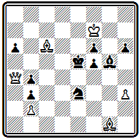
Мат в 4 хода
кроме авторского 1. Cb 7 проходило и 1. C a 8
Галицкий создавал выдающиеся произведения и другого плана, где основу содержания составляли не маты, а ходы.
Яркий пример этому —задача № 000.
№ 000
А. Галицкий «Дейче шахцейтунг», 1891 г.
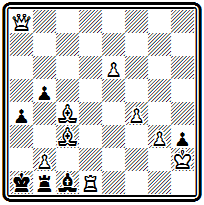
Мат в 3 хода
В ней проведена последовательно повторенная идея центробежного удаления белых фигур: 1. С h 8 С: b 2 2. Л h 1, и на любой ход черных— мат. Показательно, что даже в такой задаче Галицкий завершает игру правильными матами: 2... С: h 8 3. Ф: h 8# и 2... Л: h 1 3. Ф: h 1#. Еще два правильных мата имеются в дополнительном варианте 1... Л: b 2 + 2. Фg2 hg 3. Л: c1# и 2... bc 3. Ф: b 2 #.
Впрочем, подобных композиций у Галицкого немного, так как он недолюбливал чрезмерно сложные замыслы, которые почти неизбежно, даже при самом высоком техническом мастерстве, приводят к утяжеленной форме, далекой от его представлений об идеале шахматной задачи. Его привлекало построение задач легких, изящных по форме, но всегда ярких, впечатляющих по содержанию. Именно к этому стилю относится большинство лучших работ Галицкого, здесь он нашел свое подлинное творческое лицо.
В задаче № 000 белым надо ввести в игру ферзя. Сами они этого сделать не могут, но, используя цугцванг, заставляют черных вскрыть вертикаль «h»:
№ 000
А. Галицкий «Шахматное обозрение», 1892 г. III приз
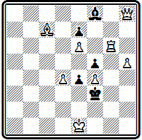
Мат в 3 хода
1. h6 С:h6 2. Лg5 С:g5 3. Фh3#. На 1... Cg7 решает 2. Л:g7 Кре3 3. Лg3# ; 1... е3 2. Фе5.
Изящное построение проблемы № 000 скрывает тонкую и красивую идею.
№ 000
А. Галицкий «Шахматное обозрение», 1893 г.
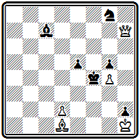
Мат в 3 хода
Вступление 1. Фс2 создает неочевидную угрозу 2. Фс3 — белые не сразу берут черного слона, а вынуждают вскрытие диагонали путем 2... е4, после чего слон бьется с матом 3. Ф : с7 #; на 2... Крс4 следует другой правильный мат 3. Фс4#. При уходе слона нападение на него осуществляется с других полей: 1... С b 8 2. Ф b З, 1... Cd 6 2. Ф d 3. Идея одновременного нападения осуществлена здесь в свежей, острой форме. Дополнительный вариант 1... Kpg 3 2. d 3 содержит включение белого ферзя тихим ходом пешки.
Позиция № 000, где использован тот же материал, что и в предыдущей, воплощает другую идею. Здесь белый ферзь дает пять матов черному королю по диагонали а2-g8, причем каждый раз с нового поля:
№ 000
А. Галицкий «Шахматное обозрение», 1893 г.
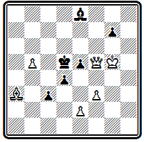
Мат в 3 хода
1. Ф f 8 ~ 2. Ф g 8+ С f 7 3. Ф: f 7#; 1... Крс4 2. Ф b 4+ Кр d 5 3. Ф b 3#; 1... Кре6 2. Ф d 6+ Кр f 7 3. Ф d 5#; 1... Cd 7 2. Фс5+ Кре6 3. Фс4#; 1... С: b 5 2. Фd6 + Kpc4 3. Фе 6# . Все маты— правильные, в трех последних существенную роль играет блокирование поля черным слоном.
Задача № 000 выделяется красивым вариантом
№ 000
А. Галицкий «Стратежи», 1900 г III приз
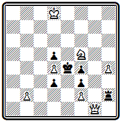
Мат в 3 хода
1. b 4 Л: f 2 с неожиданным цугцвангом после 2. h 5, завершающимся тремя правильными матами: 2... d 2 3. Ф b 1#, 2... Л~ 3. Kd 6# и 2... Кр: f 5 3. Ф g 6#. Правильные маты осуществляются также в разветвлении 1... Кр: f 5 2. Ф g 5+ Кре6 3. Ф g 6# и угрозе 2. Kd 6 + Кр: d 4 3. Фа1 # .
Тонкость четырехходовки № 000 заключается в красивом вступительном ходе слона
№ 000
А. Галицкий «Дейче шахцейтунг», 1892 г.
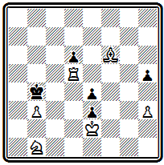
Мат в 4 хода
1. Ca 1, переводящем его через критическое поле с3: 1... Кр: b 3 2. Л b 5+ Кра2 3. Кс3+ Кра3 4. С b 2# или 3... Кр:а1 4. Л b 1# и 1... h 4 2. С b 2 Кр: b 3 3. Л b 5+ Кра4 4. Кс 3# или 3 ... Крс4 4. Ка 3# . В совершенно свободной позиции непринужденно реализуются четыре правильных матовых позиции.
Задача № 000 открывается парадоксальным ходом
№ 000
А. Галицкий «Шахматное обозрение», 1892 г.
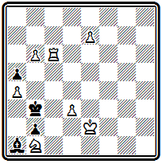
Мат в 4 хода
1. е8С. В простой позиции при свободном черном короле белые отказываются от превращения в ферзя. Смысл этого самоограничения раскрывается в варианте 1... Кра2, где нет иного пути к мату, кроме 2. Cf 7 + Кр: b1 3. Сс4 Крс2 4. Са2 #, а он возможен только при слоне, ибо ход 3. Фс4 приводил бы к пату. К этому пикантному варианту добавлены два другие, также заканчивающиеся правильными матами: 1... Кр b 4 2. Лс4+ Кр b3 3. Cf 7 Kpa 2 4. Лс1# и 1... Кр:а4 2. Лс4+ Кр b3 3. Kd 2+ Kpa 3 и 4. Ла4 # .
Галицкий много занимался темой взятия на проходе. Необычный ход пешки приводит к необычным идеям и ситуациям. В позиции № 000 с помощью этого механизма автору удалось решить трудную конструктивную задачу— сочетание двух разветвлений
№ 000
А. Галицкий «Дейче шахцейтунг», 1894 г.
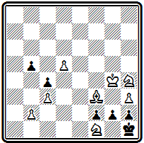
Мат в 4 хода
1. b 4 Kpg 1 2. С: g 2 h 1Ф 3. Kf 3+ Kp : g 2 4. Ке3# и 1... cb 2. Се4 Kpg 1 3. Kf 3+ Кр: f 1 4. Cd 3#. Трудность состояла в том, что одна и та же черная пешка для осуществления второго варианта должна иметь возможность двигаться, тогда как в первом она должна оставаться неподвижной, иначе после 2. С: g 2 мата не будет. Такая ситуация возможна только при использовании механизма взятия на проходе.
Любопытное единоборство слона с конем составляет содержание проблемы № 000.
№ 000
А. Галицкий «Стратежи», 1894 г

Мат в 5 ходов
В двух вариантах белые, выбирая точные позиции для слона, добиваются создания цугцванга: 1. а3 Kb 6 2. Cd 1 b 4 3. c 4+ b 3 4. Cg 4 b 2 5. Cd 1# или 4... К~ 5. Cd 7#; 1... Кс7 2. Cd 7 Ка6 3. Се6 Кс5 4. Cd 5 К~ 5. С b 3# или 4... b 4 5. Сс6#.
Легкофигурная задача № 000 содержит три тихих варианта, заканчивающихся правильными матами:
№ 000
А. Галицкий «Дейче шахцейтунг», 1894 г.
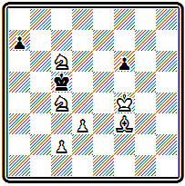
Мат в 5 ходов
1. с 3 Кр b 5 2. Kd 4+ Kpc 5 3. Kf 5 Kpb 5 4. Kd 6+ Kpa 6 5. Cb 7#, 4... Кра4 5. Cd 1# и 4... Крс5 5. d 4#; 1… а5 2. Ка7 а4 3. Ch 5 Kd 5 4. Cf 7 Крс5 5. d 4 # ; 1... f5 2. К6а5 Kpb 5 3. С b 7 Крс5 4. Сс6 а6 5. d 4 # .
Три последних мата объявляются одним и тем же ходом пешки, но матовые картины разные, так как белые фигуры занимают разное положение относительно черного короля. По материалу и характеру игры с завлечением короля в матовую сеть задача близка к позиции д'Орвилля № 35. Но там был всего один вариант, здесь же их — четыре. Сравнение этих задач наглядно показывает, насколько выросла техника композиции за каких-нибудь полвека.
Замечательных успехов добился Галицкий в области миниатюры. Это и естественно, ибо он всегда стремился малыми средствами выражать большие идеи. В примере № 000, как писал сам композитор, он стремился представить «двукратный мат ладьей по типу мата классической
эпиграммы * при пожертвовании каждого из двух разноцветных слонов». Это ему вполне удалось:
№ 000
А. Галицкий «Шахматное обозрение», 1893 г.
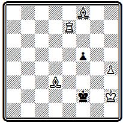
Мат в 4 хода
1. Ch6 Kpf3 2. Се 3 f4 3. Кр h3 fe 4. Л f 7 # и 1 ... f 4 2. Се2 f 3 3. Cd 2 f е 4. Л f 7#. В последнем варианте есть еще один правильный мат: 2... Kpe 1 3. С: f 4 Kpf 2 4. Cg 3#.
* «Классической эпиграммой» называют следующую старую задачу:
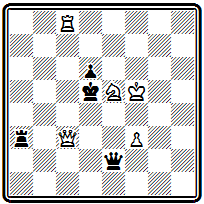
Мат в 2 хода
1. Фс5+ dc 2. Л d 8#. Она приводится в книге Гейнзе «Анастазия и шахматная игра» (1803), где приписывается некоему «Офицеру из Турина».
В задаче № 000 в предельно экономичной форме автору удалось представить два тонких варианта с изящными правильными матами. Особенно ценно, и добиться этого было нелегко, что оба варианта имеют одинаковое число ходов.
№37 5
А. Галицкий «Шахматный журнал», 1897 г
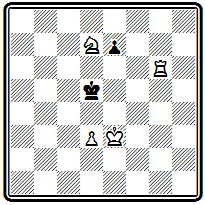
Мат в 5 ходов
1. Ла 6 е 5 2. Л b6 е 4 3. de+ Крс 4 4. Kpd 2 Kpd 4 5. Л b 4 # ; 1... е 6 2. Kpd 2 e 5 3. Крс 3 е4 4. d 4 е 3 5. Kf 6 # .
Галицкий был выдающимся художником шахмат. Его самобытность сказалась в том, что, ценя в чешской школе виртуозную технику и артистический подход к задаче, он одухотворил эти качества тонкостью и остроумием замыслов. Галицкий создал свой собственный стиль в композиции, обратив главное внимание на раскрытие идейных возможностей в игре ограниченных сил и даже отдельных фигур. У него много задач без белого ферзя, с одними легкими фигурами, а это совсем не характерно для чешской школы, где ферзь, как правило, играет важную роль.
Известный шведский композитор И. Рос назвал Галицкого «шахматным Гейне». Этот образ лучше всего характеризует творческий облик нашего талантливого соотечественника, предвестника большого расцвета шахматной композиции в Советском Союзе.
УКАЗАТЕЛЬ ЗАДАЧ ПО АВТОРАМ
Абела A. (Abela A.), ..........268
Адам P. (Adam R.). ? - 1916.........184, 190
Адама A. (Adamа А...
Андерсен A. (Anderssen А.), 1818-13
Арнель A. (Arnell A.). I849-1
(Bayer С).
Байерсдорфер A. (Bayersdorаfer А.), ......... 97
(Berger J...... 99,100,175-177, 180, 183, 191, 199
(Bctins К). .........353-357
(Betins J......352
(Bettmann Н.......316, 317
(Bettmann Е.), 1866- ? ......, 317
(Blake Р.), 1873- ? .........148-150
, .........339
(Bolton H......37-41
(Boardman H...., 312
(Brown J......67-69
Браун P. (Braune R.), .........186
(Brown Th.), ..........274
(Brede J.), .........42-45
(Bull С). .........152
де (Boer G. de), 1828- ?........241
кн. 19-351
(Baird W.), ........137, 138
(Valle G.....257, 258
Вейнгеймер P. (Weinheimer R.), ........188
(Veteinik L.....233
(Willmers R.), ........88-90
ВюрцбургО. (WurzburgO.), .......304-306.318
, .......344
, ......358-375
(Geyerstam F.), .......251, 252
(Hlineny J.), I868-I941.......230
(Grimshaw W....56-60
(Grosdemange Е.), .......108, 109
(Hunter J
Дамиано (Damiano), кн. 1512...........10
(Densmore D.....303
(Dobrusky J.....206-212
(Dollinger J.), кн. 1806...........26
(Dubbe F.), ........179
(Davis H.), 1855- ?........136
(Seeberger J.), .........98
Зильбершмидт Г, (Silberscnmidt H.) ..........25
.......334
(Iespersen I.), .......255, 256
...., 345, 347
, ? - 1897.......343
дс (Jong L. de), ........243
(Capraez F), ........265
(Carpenter G.....310
Каудерс A. (Kauders А.....187
Кничала A. (Kvicala A.....204
Кениг A. (Konig А.), .......202, 203
(Kidson H....61-63
, .......332, 333
(Klett Ph.), ........169-174
(Kling J.....120
(Kockelkorn С). ........163-168, 178, 198
(Colpa J.), 1874- ?..........246
(Kondelik К). .........214
..........329-331
(Kotrc J.), .........228, 229
(Kohtz J.), ..........163-168, 178, 198
(Kuyers L.), .........245
(Cook E), .........278, 279
(Kuskop F.......151
(Campbell J........76-81
(Lamouroux D.......110-112
Лерме P. (L'Hermet R......200
(Loveday H.), ..........54
(Loyd S.), .........280-295
(Lolli G.). кн. 1763.............23
(Laws В.), .........124-129
(Makovsky K205
. .........342
..........346
(Marin V.......269, 270
.........328
Мах 3. (Mach Z......237
(Meiners W......244
(Mendheim J.). ? - 1836........27-30
(Meredith W......307, 314
(Minckwitz J......101, 102
.........338, 340
(Musil К .........231
Мэкензи A. (Mackenzie А......153-162
(Nemo O.- Weiss O.), 1861-1
.........322
(Nix J). .........313
Новотный A. (Novotny А.......91-93
д'(Оrville A. d'). ..........31-36
(Рар О1
.........321
, .......319-321
(Pilnafek J......213
(Plachutta J.), ? -1883...........94, 95
(Planck С?..........130-132
Полерио (Polerio), кн. конец XVI......11
Понграч A. (Pongracz А.), .........259
.......
(Ponziani D.), .........24
(Pospisil J......220-225, 239
(Potempski W.), ........272
(Potempski E..
(Pradignat Е.), .....
дель (Rio E. del), кн. 1750...........19-22
(Szabo G62
Сальвно A. (Salvio А.), кн. 1604............12
...........337
(Sorensen S....249, 250
(Szirmay J.....260
(Slater G.....133-135
(Stаmmа Рh.), кн. 1737.............13-18
.......
(Taverner Т......144-147
(Turton H-66
(Traxler K.), ........226, 227
(Tuzar V......235, 240
(Taylor J....122, 123
(Wainwright J.), .......308, 315
(Feigl M.), 1871-1, 196, 1
(Finlinson J.), 1845- ? ........118, 119
(Fridlizius J.), 1, 254
(Fuss О.), .......185
(Havel M.-Kostal M
(Healey F.), ......70-75
(Heathcote G.), ......139-143
(Chocholous J...215-219
Цивинский A. (Cywinski A....96
(Cisaf V....236
(Cimburek L.), .......234
(Chenev G.), .......275-277
(Sveida J.) 1868- ? .........232
(Shinkman W.), .......295-302, 309
, ....
(Schrufer F.....181, 182
Штеннер 3. (Steiner S.), ? -1916........189
(Schultz J......247
, ........325
(Ohquist J? .........267
(Angas S......55
(Ehrenstcin M.....263,264
(Herlin Th3-107
(Erlin К), ..........192, 195
(Juchli J.), ..........266
(Jarosz O.-Jaroszynski I3
......, 327
УКАЗАТЕЛЬ ЛИТЕРАТУРЫ
1 Murray H. J. R. A history of chess. Oxford, 1913
2 Ходжаев 3. И. Новые данные по истории шахмат.
«Шахматы в СССР», № 10,
3. Stamma Ph. Essai sur le jeu des echecs. Paris, 1737
4. Riо del E. Sopra il giuoco degli scacchi. Modena, 1750
5. Lоlli G. Osservazioni teorico-pratiche sopra il giuoco degli scacchi. Bologna. 1763
6. Pопziani D. L. II giuoco incomparable degli scacchi. Modena. 1769
7. (Mоntigny). Les stratagemes des echecs. Paris, an X (1801—2)
8. Dоllinger I. Ein hundert zehn ganz neu zusammengcsetzle Schach-Endspiele. Wien, 1806
9. Mendheim I. Aufgaben fur Schachspieler. Berlin, 1832
10. Weenink H. The chess problem. Stroud, 1926
11. Оrville A. D. Problemes d'echecs. Nurenberg. 1842
12. Вrede I. Almanach fur Freunde vom Schachspiel. Altona, 1814
13. Anderssen A. Aufgaben fur Schachspieler. Breslau, 1издизд.))
14. Коhtz J. und Kockelkorn C. Das Indische Problem. Potsdam. 1903
15. Alexandre A. Collection des plus beaux problemes d'echecs. Paris, 1846
16. LowenthaI I. Era—Schachproblem—Turnierbuch. Leipzig, 1857
17. Brown J. Chess strategy. London, 1865
18. HeaIeу F. A collection of two hundred chess problems. London, 1866
19 Healeу Р. A collection of 200 chess problems composed by F. Healey
during the years . Stroud. 1908
20. Pierce J. and W. T. English chess problems. London, 1876
21. Lange M. Handbuch der Schachaufgaben, Leipzig, 1862
22. Dufresne J. Anthologie der Schachaufgaben. Berlin, 1864
23. Pradignat E. 100 des meilleurs problemes d'echecs. Paris, (1883)
24. Keeb le J. An English bohemian. A tribute to B. G. Laws. Stroud, 1933
25. The chess problem: text-book with illustrations. Containing four hundred positions selected
from the works ol H. J. С Andrews, E. N. Frankenstein, B. G. Laws & C. Planck. London, (1887)
25 a. Seven hundred chess problems, selected from the compositions of Mrs. W. I. Вaird. London. 1902
26. Mаскenzie A. F. Chess: its poetry and its prose. Kingston, 1887
27. Mаскепzie A. F. Chess lyrics. New York, 1905
28. Koh tz J. und Kockelкоrn C. 101 ausgewahlte Schachauf gaben. Braunschweig, 1875
29. Gartner Th., Sackmann F. und Dehler O. Akademischer Schachklub Munchen.
Festschrift zur Feier seines 25 jahrigen Bestehens. Munchen, 1911
30. КIett Ph. Schachprobleme. Leipzig, 1878
31. Berger J. Das Schachproblem und dessen kunslgerechte Dar-stellung. Leipzig. 1884.
32. Berger J. Probleme, Studien und Partien. Leipzig, 1914
33. White A. Robert Braune, apotre de la symetric Paris, 1913
34. Коhtz J. und Kockelkorn С. Zur Kenntnis des SchachProblems.
Kritiken und ausgewahlte Aufgahen von A. Bayersdorfer otsdam. 1902
35. Копig A. Kratke pojednani о ulohach. Druha last. Praha, 1939
(Перепечатано из «Svetozor», 1869 И. Миканом)
36. Dobrusky J. Sachove ulohy. Praha. 1907
37. PоspisiI J. Ceske Sachove ulohy. Praha, 1887
38. White A. С. & Thompson W. H. Ceske’ Melodie. Eine Sammlung von 202
Schachaufgaben von Josef Pospisil. Potsdam, 1908
39. Pospisil J. Sachove ulohy (Ceske Melodie II) Vydal dr Zd. Mach. Praha, 1917
40. Коtгc J. I Traxler K. Sachove ulohy. Viden, 1910
41. Niemeijer M. Bloemlezing van Nederlandsche Schaakproblemen uit de jaren 1792—1933.
Amsterdam, 1934.
42. Агnell A. og Sorensen A. Nordiske Skakproblemer fra tiden 1858—78. Kjobenhavn. 1879
43. Rоs J. A. 370 utvalda svenska Schackproblemen (Stockholm, 1901)
44. Jespersen J. 320 Danske Skakopgaver Saerling 1878—1902. Stockholm, 1902
45. Valle G. B. 100 problemi di scacchi. Livorno, 1878
46. Valle G. B. L'arte di construire i problemi di scacchi. Livorno, 1891
47. Вогоs S. es Lindner L. Magyar sakkfeladvany antologia (Kecskemet), 1939
48. GоId S. 200 Schachaufgaben. Wien, 1883
49. Henneberger M. Alpine chess. Stroud, 1921
50. SоIa P. Suomi. Stroud, 1934
51 Tolosa y Carreras I. Traite analitique du probleme d"echecs. Paris, 1892
52. Wrobel M. 100 lat polskiej kompozycji szachovej. Warszawa, 1956
53. White A. С, Allen E. W. & Marshall В. М. A. Sketchbook of American chess problematists.
Stamford, 1942
54. Сооk E В. Henгу W. R. & Gilberg С. A. American chessnuts. New York, 1868
55. White A. C. Sam Loyd and his chess problems. Leeds. 1913
56. Кофман Р. М. Избранные задачи С. Лойда. Москва, 1960.
57. Loyd S. Chess strategy. Elizabeth, 1878
58. Wurzbuгg O., White A. C. & Hume G. The golden Argosy. Stroud, 1929
59. A century of piled by A. White, С. Мansfield. F. Gamage & V. Eaton.
Stamford, 1941
60. Meгеdith W. 100 chess problems. Stroud, 1916
61. Д. Шахматная игра, приведенная в систематический порядок. С-Пб, 1824
62. С. Собрание скахографических и других шахматных задач. С-Пб. 1867
63. Бурмейстер А. М. Шахматная задача. Ревель, 1903.
64. Вetins J. un К. Golotnes un Uzdevumi. Riga, 1930
65. Galitzку A. W. Schachprobleme. Hsg von A. Djakonoff und O. Ackermann. Berlin. 1924
66. В. Об осложнении идей в шахматных задачах, С-Пб. 1897